Fresh Organic Produce
After the farmers spent a lot of time cultivating and after harvesting, we packed it and put it in our organic farm shop, which visitors to our farm can buy. Go to their homes to eat with confidence, as it can be the work of our model farmers on our organic farms. Every day we many people that come to visit our organic farm that buy our product and some people they don't come to visit our farm but they come to buy our vegetables and fruit because they know our farmer has grown this vegetables without chemicals. In our shop we can many different vegetables and fruit and sometimes our customer they ask to harvest by themself in our farm because they want fresh vegetables and fruit. Some people they don’t come to our farm to buy vegetables and fruit but they ask our farm prepare vegetables and fruits and deliver to their home for them. Our shop every busy every day because many customers come and sometimes we don't have enough vegetables and fruit to sell to our customer so next year’s we plan to expanse our farm so we have more vegetables and fruit to provide to our customer.


Khmer Organic Cashew
Our organic cashews are grown out in the farms using certified fertilizers. Once the fruits are mature enough, our farmers will pick them and send them over to the processing facilities which will later separate the nuts for consumption. At Khmer Organic, we provide a variety of cashew nuts ranging from raw cashew nuts to seasoned cashew nuts. These seasonings include salted, red pepper, turmeric, moringa, long pepper, and plain roasted.


 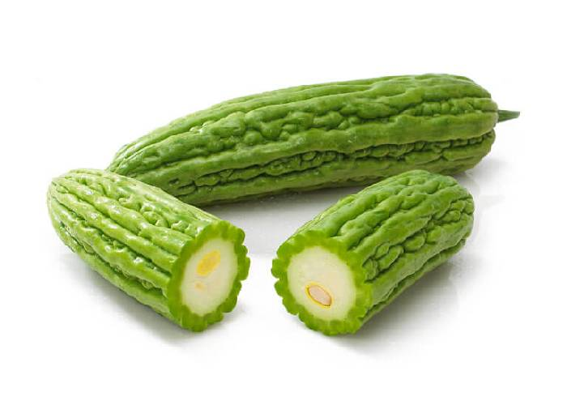
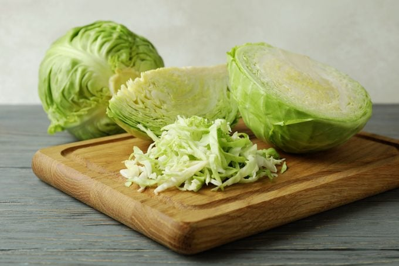
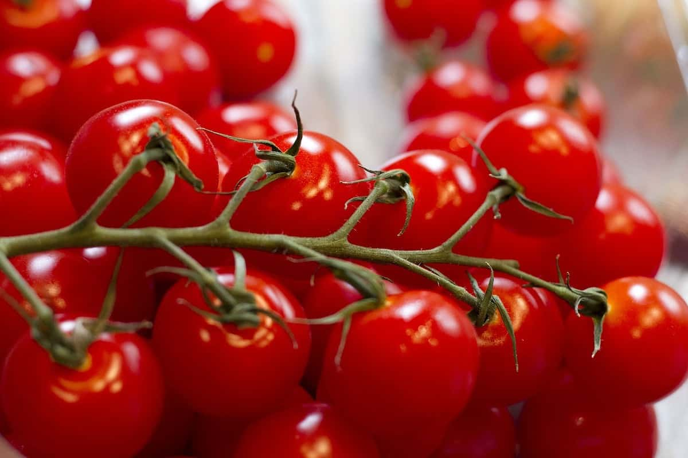
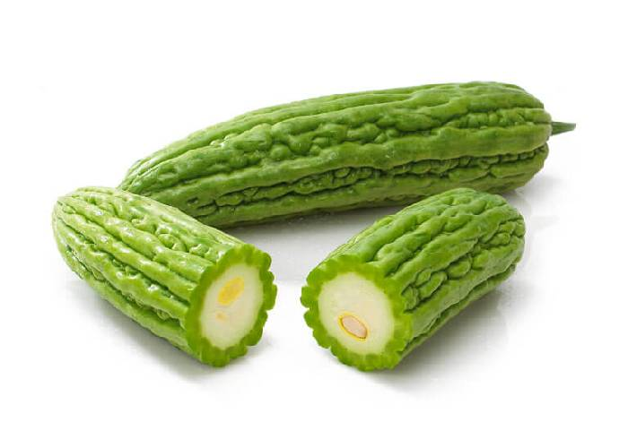
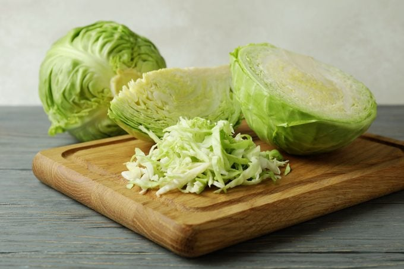
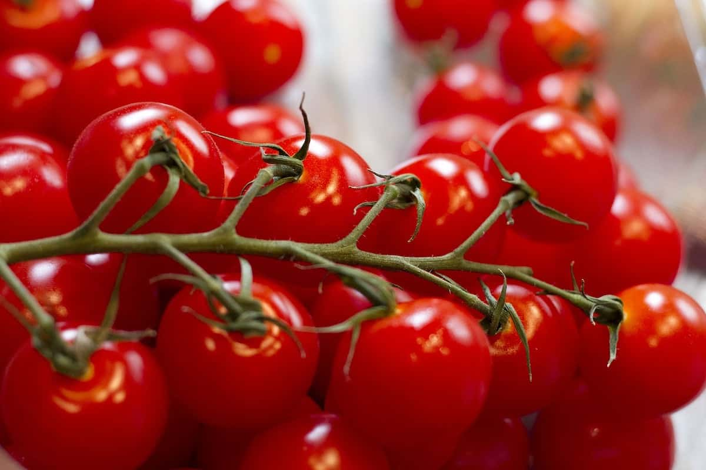
 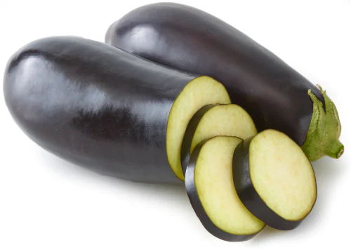
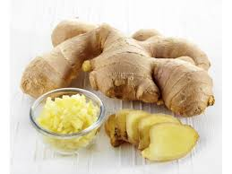
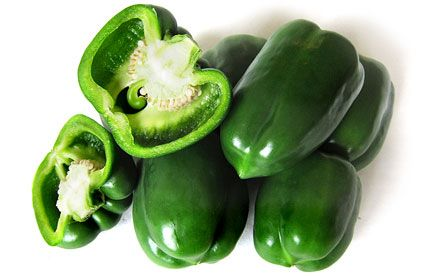
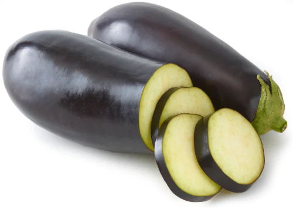
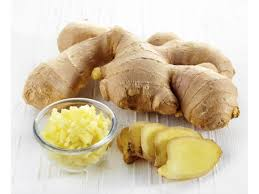
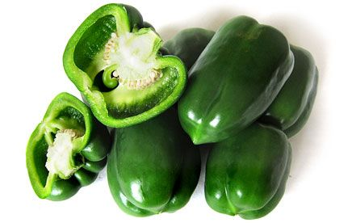
 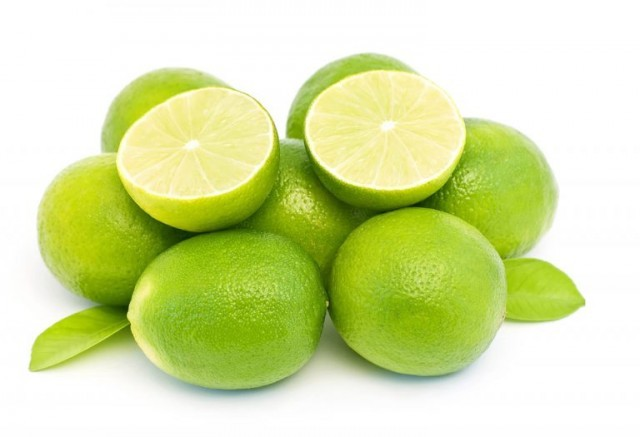
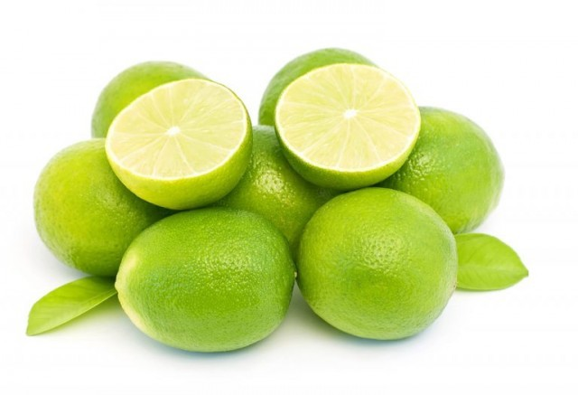
 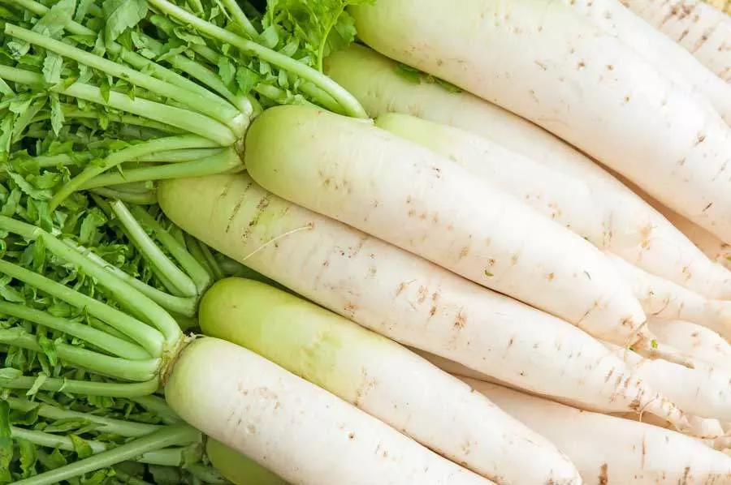
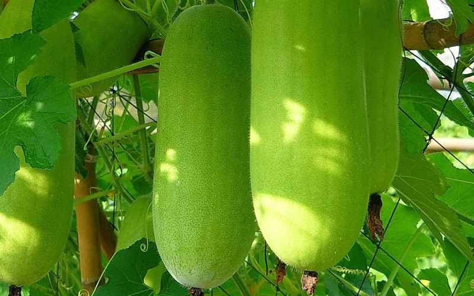
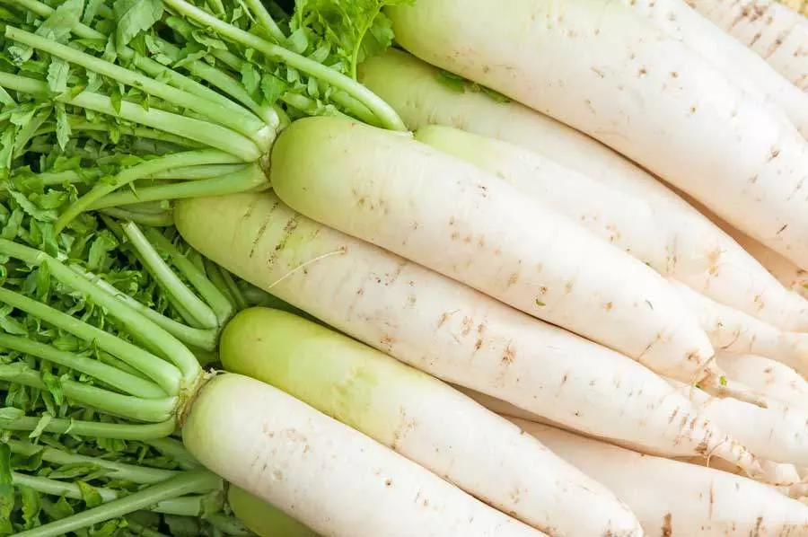
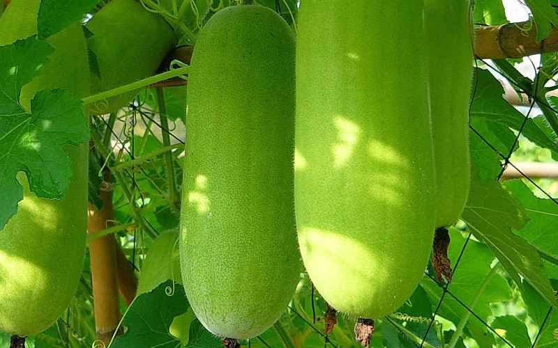
Khmer Organic Cashew
Our organic cashews are grown out in the farms using certified fertilizers. Once the fruits are mature enough, our farmers will pick them and send them over to the processing facilities which will later separate the nuts for consumption. At Our Organic Farm, we provide a variety of cashew nuts ranging from raw cashew nuts to seasoned cashew nuts. These seasonings include salted, red pepper, turmeric, moringa, long pepper, and plain roasted.
Khmer Organic Cereal
In our cereal line we offer wide range of locally and without any synthetic fertilisers or pesticides grown products. In Khmer Organic Beans line, we offer four types – red, black, soy and mung beans. Each with their own benefits, beans are versatile in the kitchen and is a great addition to a daily healthy diet. We also offer black and white sesame seeds, basil seeds and ground peanuts. We continously try to expand our locally grown cereal offering and support local farmers who choose to grow sustainably. All our products are selected for the highest quality in flavour, quality and nutrition. Selection, processing and packaging follow strict food health and safety standards.